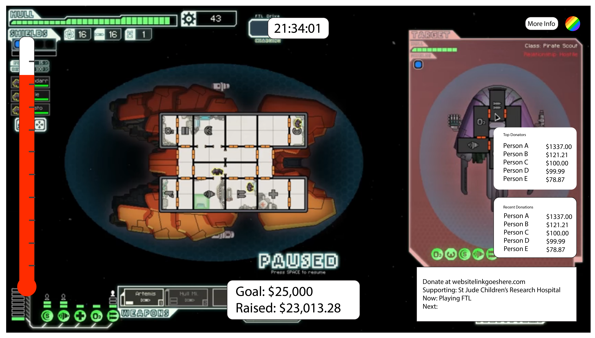

Twitch Gives is a web extension supported by the Twitch platform to support the dissemination of data from philanthropic streams and charity donations to the average viewer. This includes ranking information, like 'top donors', as well as time specific information like progress towards the current goal and time remaining on-stream. My role as UX designer was to determine the value provided to the viewer through features and overall appearance of the web extension, and to design these features as an interactive overlay to the streamed video itself. Playtests and usability testing were core to development, and prototyping began in low-fidelity paper iterations all the way to a mock web-app of the product that currently exists on Twitch's platform.
For this project we made a paper prototype, a high fidelity prototype (made interactive through the use of InVision), and a web-app which is essentially a functional digital prototype of the Twitch Extension. In general, the designs we had were based off responses from the MHCI Extra Life stream and from watching existing charity streams and observing what features they include for their viewers.
We designed 3 stages of playtesting based on our low-fi prototype, mid-fi prototype, and high-fi prototypes. Below is an example of our high-fi prototype and our streamer configuration within the app itself - for further information, resources, and images regarding prototyping and playtesting, please contact me.
Our team of 5 members allowed us to divide the project by skills; we had two developlers, two researchers, and I served as the project manager as well as the UI/UX designer. I coordinated task management and general communication standards via Slack and derived bi-weekly goals for team members. Team meetings and deliverables were organized by myself, and regular check-ins with individuals who needed more guidance or support, especially development, were added into the project timeline when needed.